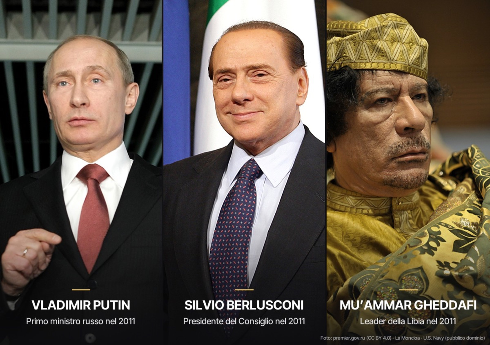

Libia 2011: la guerra che serviva a Parigi, il conto pagato dall'Italia
Cosa c'era nell'accordo Putin Berlusconi e Gheddafi

Lunedì 30 novembre 2026, alle 14, la Corte d'appello di Parigi dirà se Nicolas Sarkozy è colpevole di aver preso soldi da Muammar Gheddafi per la campagna elettorale del 2007. In primo grado, il 25 settembre 2025, è stato condannato a cinque anni per associazione a delinquere. In appello l'accusa ne ha chiesti sette.
Quattro anni dopo quella campagna, lo stesso Sarkozy fu il primo a far partire gli aerei contro il colonnello. Se la Corte confermerà la condanna, la storia della guerra in Libia andrà riletta. Da qui, dall'Italia, conviene farlo subito.
Roma, Mosca, Tripoli: la mappa del gas
Mettiamo in fila i fatti, senza tifo.
Nell'ottobre 2004 Silvio Berlusconi e Gheddafi inaugurano Greenstream, il gasdotto che porta il gas libico in Sicilia. Nel 2007 ENI e Gazprom firmano l'intesa per South Stream, il tubo che doveva portare il gas russo in Europa passando sotto il Mar Nero. Il 30 agosto 2008, a Bengasi, Berlusconi e Gheddafi firmano il Trattato di amicizia: l'Italia si impegna a spendere 5 miliardi di dollari in vent'anni in opere pubbliche in Libia, l'ENI resta il primo produttore straniero del Paese.
Il 16 febbraio 2011, durante la visita del presidente russo Medvedev in Italia, ENI e Gazprom firmano l'accordo per far entrare i russi nel giacimento libico di Elephant, con metà della quota italiana.
Italia, Russia e Libia: il gas a sud, il gas a est e un'azienda italiana in mezzo. Per un Paese senza materie prime era un'assicurazione sulla bolletta. Per qualcun altro, a quanto pare, era un problema.
Un mese dopo arrivano i Rafale
Il 17 marzo 2011 il Consiglio di sicurezza dell'ONU approva la risoluzione 1973: zona di interdizione al volo per proteggere i civili. Sabato 19 marzo i primi a bombardare sono i caccia francesi, prima ancora che la coalizione abbia un comando comune. Parigi non aspetta nessuno.
Il 20 ottobre Gheddafi viene ucciso vicino a Sirte. Il 12 novembre Berlusconi si dimette, travolto dalla crisi dello spread. In otto mesi l'asse Roma-Tripoli non esiste più.
Cosa scriveva il consigliere di Hillary Clinton
Il 2 aprile 2011 Sidney Blumenthal, consigliere informale di Hillary Clinton, allora segretario di Stato, le manda un promemoria. Il Dipartimento di Stato americano lo ha reso pubblico tra il 2015 e il 2016.
Tra i motivi che, secondo le sue fonti, spingevano Sarkozy alla guerra, elenca:
una quota più grande del petrolio libico;
più influenza francese nel Nord Africa;
un aiuto alla sua situazione politica interna;
l'occasione per l'esercito francese di mostrare la sua forza;
la preoccupazione per i piani di Gheddafi di prendere il posto della Francia nell'Africa francofona, anche con le sue riserve d'oro.
È un promemoria con fonti anonime, non una sentenza, e Sarkozy ha sempre negato di aver agito per il petrolio. Però nel settembre 2016 la Commissione Esteri della Camera dei Comuni britannica, nel suo rapporto sulla Libia, riprende quell'elenco e conclude che l'intervento si basava su presupposti sbagliati, con la responsabilità politica in capo a David Cameron e allo stesso Sarkozy. Lo hanno scritto gli inglesi, che quella guerra l'hanno fatta.
E Berlusconi?
Qui serve onestà, perché la storia non è tutta da una parte. L'Italia alla guerra ha partecipato: basi, aerei, voto del Parlamento. Berlusconi ha sempre detto di essere stato contrario e di essersi dovuto adeguare. Nel 2017 Giorgio Napolitano, allora presidente della Repubblica, ha risposto che la decisione l'aveva presa il governo.
Chi spinse chi lo lascio agli storici. Il risultato invece lo vediamo tutti: un amico storico che diventa bersaglio, un trattato da miliardi che finisce in un cassetto, un Paese davanti alle nostre coste che da anni ha due governi rivali.
Facciamo un gioco
Rovesciamo la scena. Un presidente del Consiglio italiano accusato di aver preso soldi da un dittatore. Quattro anni dopo, quel presidente è il primo a bombardare il dittatore, e il suo Paese ci guadagna spazio sul petrolio. Il giorno dopo i giornali francesi parlerebbero di Italia inaffidabile, di affarismo, di maccheroni e mandolini.
Siccome all'Eliseo c'era Sarkozy, per anni è stata una guerra umanitaria. Punto.
Anche Washington, a cose fatte, ha cambiato tono. Nel 2016 Barack Obama ha detto che il suo errore peggiore da presidente è stato non preparare il dopo-Gheddafi.
Quello che resta all'Italia
Che dietro ci fosse un piano per fermare un'alleanza energetica tra Roma, Mosca e Tripoli non lo dimostra nessun documento: è una lettura, e la presento come tale. Gli interessi francesi invece sono scritti nero su bianco, e li ha messi in fila chi stava dalla stessa parte di Parigi.
Il conto, quello sì, è arrivato a noi: l'energia da cercare altrove, il caos sulla rotta del Mediterraneo centrale, le aziende italiane in un Paese spaccato in due.
Il 30 novembre sapremo cosa pensa la giustizia francese dei soldi di Gheddafi a Sarkozy. Sulla guerra del 2011, una sentenza non arriverà mai. Voi che idea vi siete fatti: fu una guerra per i civili di Bengasi o per il petrolio della Cirenaica?
Le fonti
Testo del Trattato di amicizia Italia-Libia del 30 agosto 2008: https://it.wikisource.org/wiki/Trattato_di_amicizia,_partenariato_e_cooperazione_tra_la_Repubblica_Italiana_e_la_Grande_Giamahiria_Araba_Libica_Popolare_Socialista
Accordo ENI-Gazprom sul giacimento Elephant, 16 febbraio 2011: https://www.bloomberg.com/news/articles/2011-02-16/gazprom-agrees-to-join-eni-s-elephant-oil-project-in-libya
Rapporto della Commissione Esteri della Camera dei Comuni, 14 settembre 2016: https://api.parliament.uk/committees/publications/13472
Processo d'appello a Sarkozy, verdetto il 30 novembre: https://it.euronews.com/my-europe/2026/05/27/processo-dappello-a-nicolas-sarkozy-sul-caso-libico-verdetto-atteso-il-30-novembre